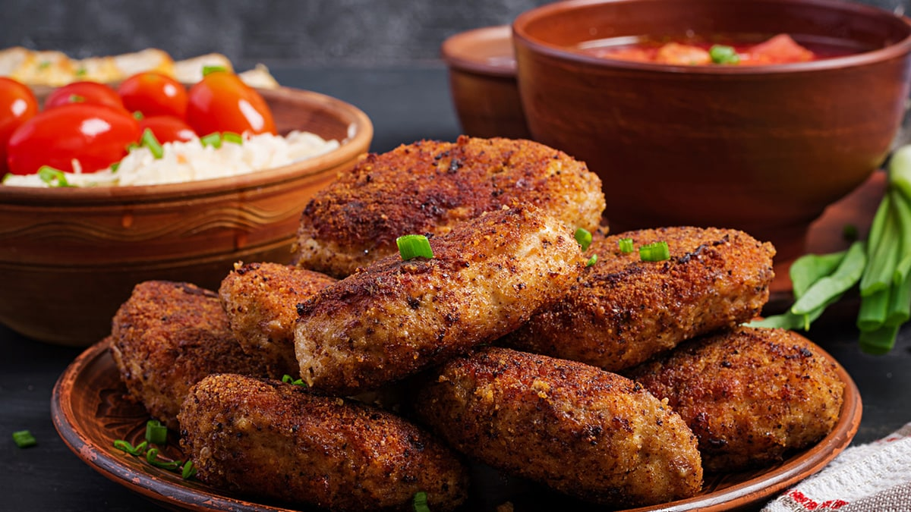
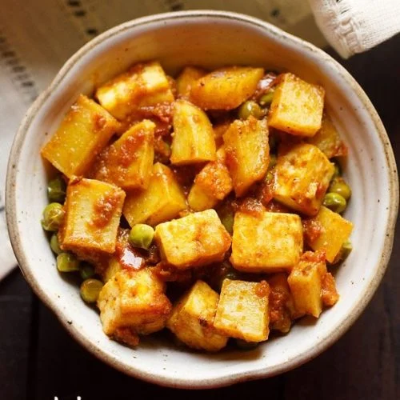
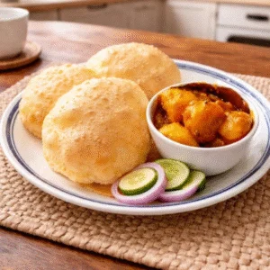
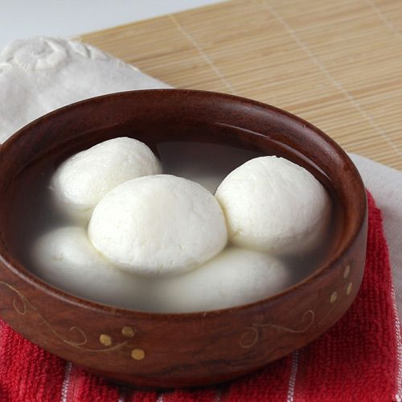
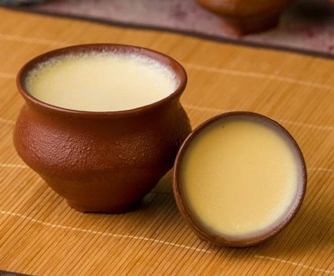
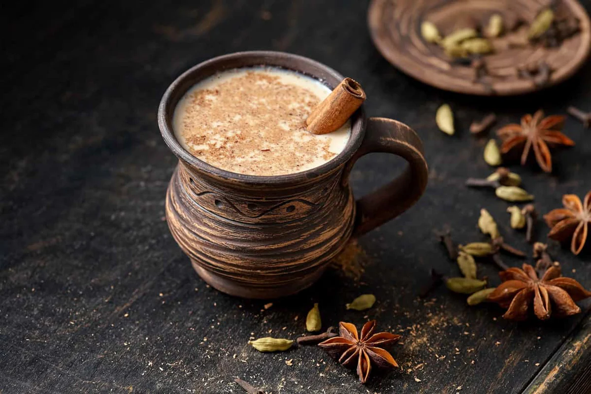

Starters
-
Vegetable Chop

A classic Bengali street-food style croquette packed with beetroot, carrots, peanuts, and spices, coated in breadcrumbs.
$1.99
-
Paneer Tikka

Cubes of paneer marinated in spiced yogurt and grilled to smoky perfection.
$4.99
Back to Top
Main Course
-
Chanar Dalna

Soft, handmade cottage cheese cubes and potato chunks cooked in a light, aromatic tomato-ginger broth.
$5.99
-
Alur Dom & Luchi

Deep-fried, puffed flatbreads (luchi) served with a rich, spiced potato curry (alur dom).
$7.99
Back to Top
Desserts
-
Rosogolla

Soft, spongy cheese balls soaked in light sugar syrup.
$3.99
-
Mishti Doi

Traditional Bengali sweetened yogurt, creamy and rich in flavor.
$4.99
Back to Top
Drinks
-
Mosla Cha

Spiced tea brewed with black tea, milk, and aromatic spices.
$2.99
-
Mango Lassi
A refreshing yogurt-based mango smoothie, sweet and creamy.
$3.99
Back to Top
Book A Table